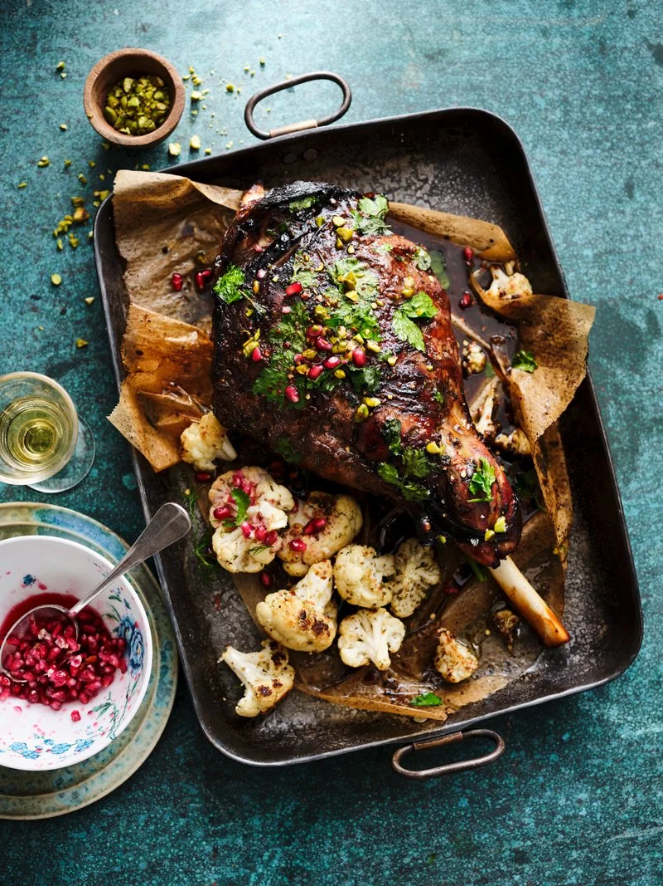

Odin Recipes
Roast Lamb Shoulder

Description
This recipe creates a melt in the mouth lamb shoulder.
Recipe is for 2 people.
Make sure that you save the stock produced at the end!
Ingredients
- 1KG bone-in lamb shoulder
- 8 carrots
- 2 onions
- 1 head of garlic
Method
- Take the lamb out of the fridge half an hour before cooking. Cut the garlic head in half and rub over the meat. Cover the shoudler in salt.
- Preheat the oven to 200c. Roughly chop the carrots and onions, peel the garlic, and place them all at the bottom of a roasting tin.
- Place the lamb on top of the veg ans fill the tin with 2 pints of water. You are aiming to cover most of the lamb with this.
- Tent the tin with foil and put it in the oven for half an hour. When this half hour is up, turn the heat to 150c and cook for 3 hours.
- For the final half an hour, remove the foil to brown and crisp the lamb.
- When cooking is complete, take the lamb from the oven and let it rest for 15 minutes. No need to carve this meat, it should just fall off the bone.
- Serve with potatoes of your choice, the roasted veg, and a good serving of that stock.